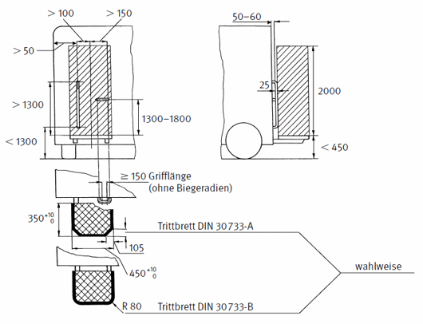

Form und Lage der Haltegriffe sind nur beispielhaft dargestellt. Es können auch andere Anordnungen gewählt werden, wenn die angegebenen Maße eingehalten werden, beispielsweise kann der zur Fahrzeugmitte hin angeordnete Griff auch senkrecht angebracht werden. Das Trittbrett kann um eine horizontale oder eine vertikale Achse drehbar angeordnet sein.
Zu Stehplätzen an Abfallsammelfahrzeugen, die unter den Anwendungsbereich der Maschinenverordnung fallen, siehe DIN EN 1501-1 "Abfallsammelfahrzeuge und die dazugehörigen Schüttungen; Allgemeine Anforderungen und Sicherheitsanforderungen; Teil 1; Hecklader"